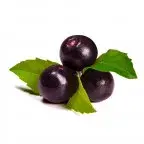

Arys' Custom Asset Importer
- Downloads
- 16,800
- Favourites
- 0
- Mod lists
- 1
This is simply a mod framework meant for mod creators to import custom asset bundles into SPT without the need to worry about writing a client mod.
For normal users:
This mod will be a dependency for other mods (such as Choccy’s RPG-7) and will still need to be installed.
Click on the “Installation for Users” tab above to see how to install!
Formod creators:
Please go to my GitHub repository (link to source code is on the right sidebar) and read the README or Wiki for instructions on how to add your own custom assets.
(EFT-SDK now has examples on how to create custom particle effects, THANKS TO CHOCCY)
Custom particle system effects and custom rig layouts are imported.
- Open the .7z file with 7-Zip
- Extract the “BepInEx” folder into your SPT directory
- Adding new custom projectiles
- Adding new custom sprites/images
- Replacing existing Tarkov textures with your own textures (retexture mods using this framework that edit the same bundle file will be compatible unless they edit the same texture images)
Version
1.1.1
Updated for SPT 3.9.0
Version
1.0.1
Updated for SPT-AKI 3.8.0
If you use Choccy’s RPG-7 mod but don’t have this mod framework installed yet, I will slap you